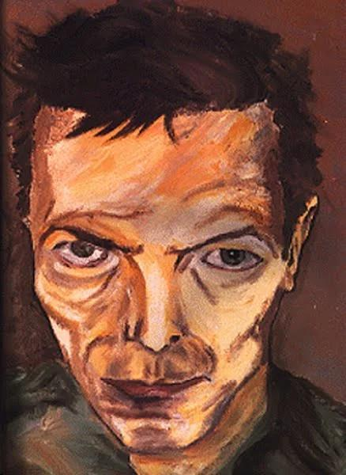
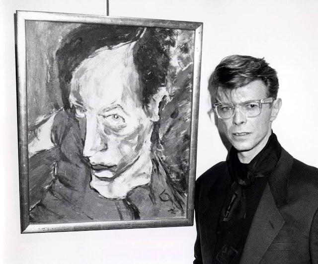
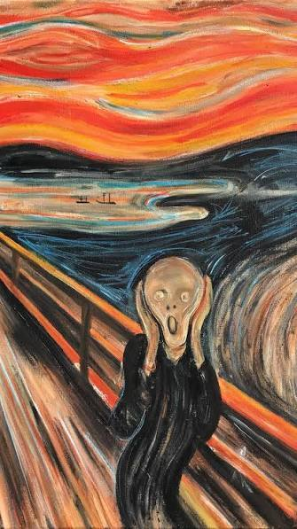
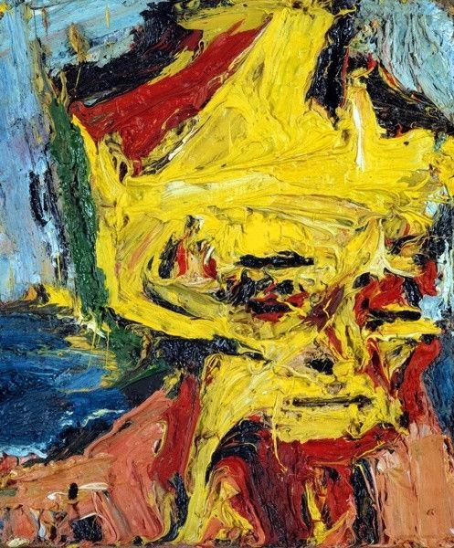
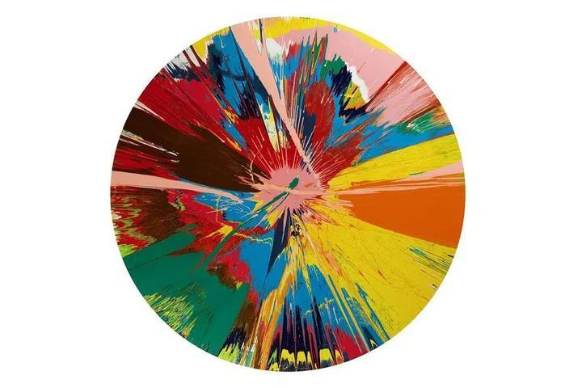
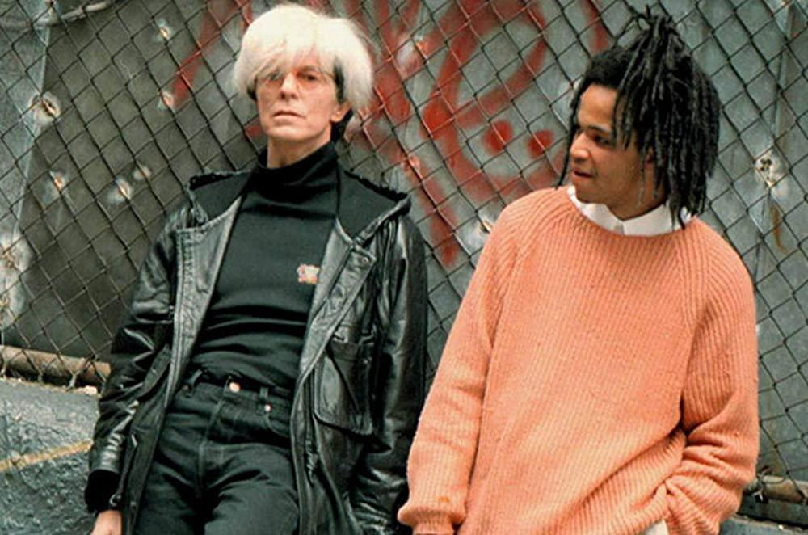
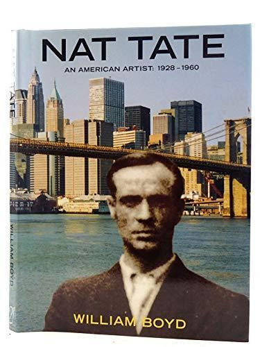

David Bowie, el pintor
"La pintura era algo que hacía puramente para mí. Nunca tuve que preocuparme por las listas de éxitos, las críticas o las expectativas del público. Era mi espacio privado" (Entrevista con The New York Times, 1998).
Bowie no era simplemente un músico que pintaba en sus ratos libres. Tenía una relación bastante profunda con las artes visuales. De hecho, su interés por la pintura, el dibujo, el diseño y la estética atravesó prácticamente toda su carrera.


Su producción artística incluye: Retratos y autorretratos. Pinturas abstractas y expresionistas. Paisajes y composiciones de inspiración urbana. Dibujos y estudios de figuras humanas. Obras influenciadas por el expresionismo alemán y el arte moderno. No tenía una única identidad pictórica. Experimentaba con estilos, materiales y referencias, del mismo modo que lo hacía con la música.
¿Qué tipo de pintor era?
Era un artista visual bastante intuitivo y experimental. Su producción tiene valor para comprender su universo creativo. Hay algo que se repite en sus cuadros y en su música: la identidad, la transformación, la ambigüedad, la figura humana y la fascinación por lo extraño. David Bowie utilizaba la pintura como un refugio terapéutico, un espacio de confrontación interna y un complemento directo para su proceso musical. Más allá de ser un pasatiempo, el arte visual fue la base de su formación académica en la Escuela de Arte de Croydon y una necesidad expresiva que mantuvo en privado durante gran parte de su vida.
Sus influencias artísticas

Expresionismo alemán

Egon Schiele

Francis Picabia

Frank Auerbach
Su primera gran exposición: 1995
En abril de 1995 presentó en Londres una exposición titulada New Afro/Pagan and Work: 1975–1995.

Incluía: Retratos realizados en distintos momentos. Cabezas escultóricas pintadas en tonos metálicos. Dibujos y trabajos en carbonilla. Dos diseños de papel pintado que utilizó para construir una instalación.
Bowie y el mundo del arte contemporáneo
Bowie no solamente producía arte, sino que participaba activamente de su escena.

En 1995 realizó una Spin Painting junto a Damien Hirst.

En 1996 interpretó a Andy Warhol en la película Basquiat

Fue parte del entorno editorial de Modern Painters, donde entrevistó a artistas contemporáneos.
